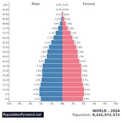

서울 인구 데이터 뉴스 Seoul
청년 인구, 5년 새 8.2% 감소
서울 청년 인구
가 지속적으로 감소했습니다.
자료: 국가통계포털
핵심 발견
20대 인구 감소 폭이 가장 큽니다.
외곽 지역의 감소율이 높습니다.
원자료 확인
2024~2026년 서울 청년 인구
연도
인구
증감률
2024
2,410,000명
-2.1%
2025
2,350,000명
-2.5%
2026
2,290,000명
-2.6%

서울 청년 인구 추이. 자료: 국가통계포털
검색어
지역
전체
서울
적용
청년 인구
229만 명
전년 대비
2.6%
감소
DATA NEWS
지역별 데이터를 탐색해 변화의 흐름을 확인하세요.
2026년 인구
229만 명
전년 대비
-2.6%
5년 누적
-8.2%
데이터